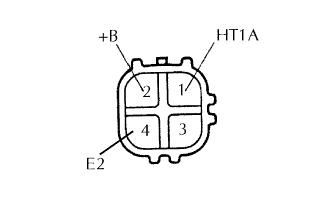
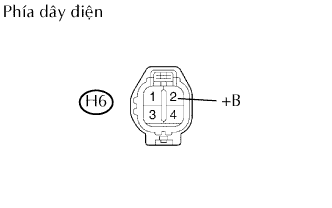
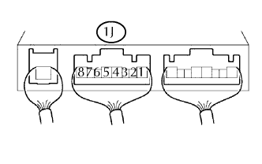
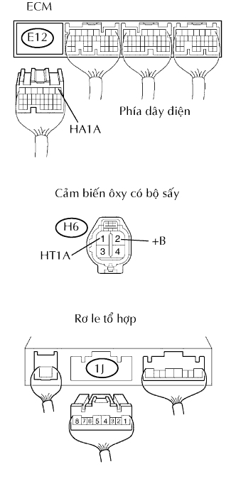

DTC P0135/21 Hỏng mạch bộ sấy cảm biến ôxy (A/F) ( Thân máy 1 Cảm biến 1) |
| Số mã DTC | Điều kiện phát hiện DTC | Khu vực nghi ngờ |
| P0135/21 | Hở hay ngắn mạch trong mạch cảm biến ôxy có sấy với thời gian 0.5 giây trở lên |
|
| 1.KIỂM TRA CẢM BIẾN ÔXY CÓ BỘ SẤY |
|  |
Ngắt giắc nối H6 của cảm biến.
Đo điện trở giữa của cảm biến.
| Nối dụng cụ đo | Điều kiện | Điều kiện tiêu chuẩn |
| 1 (HT1A) - 2 (+B) | 20°C (68°F) | 5 đến 10 Ω |
| 1 (HT1A) - 4 (E2) | - | 10 kΩ trở lên |
|
| ||||
| OK | |
| 2.KIỂM TRA DÂY ĐIỆN (ĐIỆN ÁP +B) |
|  |
Ngắt giắc nối H6 của cảm biến ôxy có sấy.
Bật khoá điện ON.
Đo điện áp của giắc nối phía dây điện.
| Nối dụng cụ đo | Điều kiện tiêu chuẩn |
| H6-2 (+B) - Mát thân xe | 9 đến 14 V |
|
| ||||
| NG | |
| 3.KIỂM TRA RƠLE TỔ HỢP (RƠLE MAIN) |
|  |
Tháo rơle tổ hợp ra hộp đầu nối khoang động cơ (Xem trang Kích chuột vào đây).
Đo điện áp của rơle MAIN.
| Nối dụng cụ đo | Điều kiện | Điều kiện tiêu chuẩn |
| 1J-5 - Mát thân xe | Khoá điện ON | 10 đến 14 V |
|
| ||||
| OK | |
| 4.KIỂM TRA DÂY ĐIỆN (CẢM BIẾN ÔXY CÓ BỘ SẤY - ECM, RƠ LE TỔ HỢP (RƠLE MAIN)) |
|  |
Ngắt giắc nối H6 của cảm biến.
Ngắt giắc nối E12 của ECM.
Ngắt giắc 1J ra khỏi hộp đầu nối khoang động cơ (Xem trang Kích chuột vào đây).
Đo điện trở của các giắc nối phía dây điện.
| Nối dụng cụ đo | Điều kiện tiêu chuẩn |
| H6-1 - E12-1 (HA1A) | Dưới 1 Ω |
| H6-2 (+B) - 1J-5 | Dưới 1 Ω |
| H6-1 hay E12-1 (HA1A) - Mát thân xe | 10 kΩ trở lên |
| H6-2 (+B) hay 1J-5 - Mát thân xe | 10 kΩ trở lên |
|
| ||||
| OK | |
| 5.KIỂM TRA XEM MÃ DTC CÓ TÁI XUẤT HIỆN KHÔNG |
Nối máy chẩn đoán với giắc DLC3.
Bật khóa điện đến vị trí ON và bật máy chẩn đoán ON.
Vào các menu sau: Powertrain / Engine and ECT / DTC.
Đọc các mã DTC.
| Hiển thị (phát ra DTC) | Đi đến |
| Không phát ra | A |
| Các mã mạch cảm biến ôxy có bộ sấy | B |
|
| ||||
| A | ||
| ||